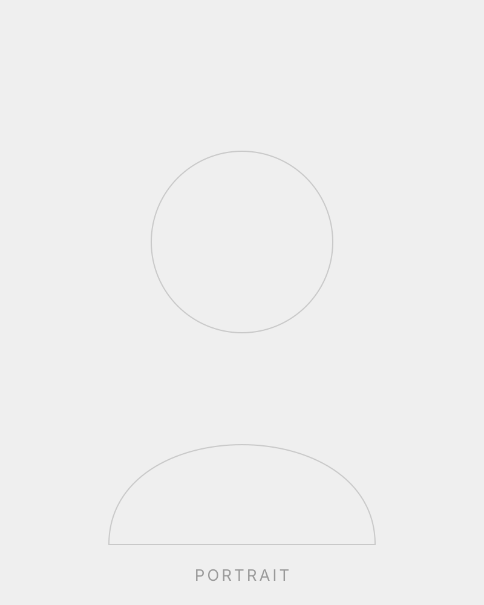

Filmmaker · Freelancer
Katarina
Holzmann Ekholm
Independent filmmaker working across direction, cinematography and editing. Available for freelance collaborations.
Experience
- Director & DoPFreelance · 2018—Present
- EditorFreelance · 2016—Present
- Camera AssistantVarious productions
Focus
- Documentary
- Short film
- Commercial & music video
About
A storyteller
behind the lens
Katarina Holzmann Ekholm is a filmmaker and freelancer whose work moves between documentary intimacy and cinematic craft. She approaches every project with a clear eye for light, rhythm and the quiet moments that carry a story.
Working independently, she collaborates with artists, brands and production companies — from first concept through to the final cut.
Works
- Northern Light 2024
- Still Waters 2023
- In Between 2022
- Everyday 2021